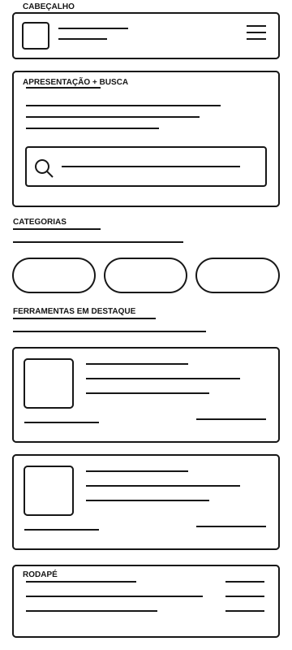
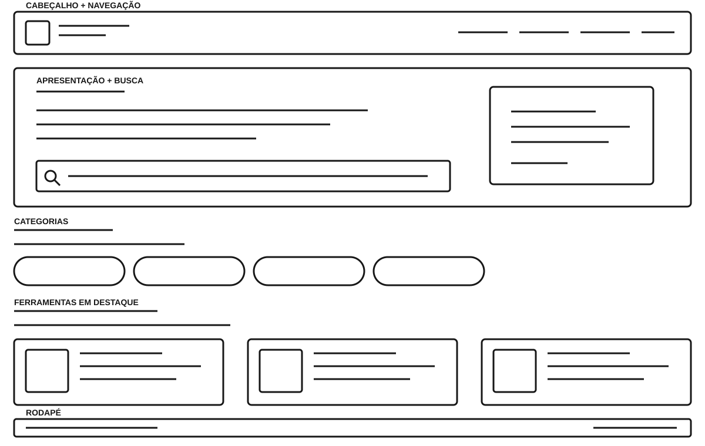

Títulos e marca
JetBrains Mono
Será usada na marca, nos títulos, nos rótulos e em pequenos elementos que remetam a código e terminal.
Planejamento do site
Um guia prático para descobrir, comparar e guardar ferramentas úteis durante o desenvolvimento de projetos.
O nome combina a ideia de uma caixa de ferramentas com o universo do desenvolvimento. Ele representa um espaço centralizado onde desenvolvedores podem encontrar recursos para diferentes etapas do trabalho, montar sua própria seleção e tomar decisões mais informadas sobre as tecnologias que utilizam.
Domínio sugerido: caixadev.dev
O site reunirá ferramentas úteis para desenvolvedores e ajudará na escolha de tecnologias para diferentes necessidades de um projeto. A experiência será distribuída em três páginas: uma apresentação da proposta, um catálogo pesquisável de ferramentas e uma área para consultar os itens marcados como favoritos.
No catálogo, cada ferramenta apresentará informações como nome, categoria, finalidade e modelo de acesso. A pesquisa e os filtros facilitarão a comparação, enquanto os favoritos permitirão que o visitante mantenha uma seleção pessoal no próprio navegador.
Qual ferramenta atende melhor à etapa atual do meu projeto de desenvolvimento?
Como posso encontrar ferramentas gratuitas de uma categoria específica?
Onde posso guardar minhas ferramentas preferidas para consultar depois?
A paleta é inspirada em editores de código e terminais. Os tons escuros criam a base da interface, enquanto o verde destaca a marca, títulos e ações importantes. Cores claras mantêm a leitura confortável e acessível.
Terminal
#0D1117
Fundo principal
Painel
#161B22
Cartões e navegação
Execução
#3FB950
Destaques e ações
Texto
#F0F6FC
Conteúdo principal
Comentário
#8B949E
Conteúdo secundário
Títulos e marca
JetBrains Mono
Será usada na marca, nos títulos, nos rótulos e em pequenos elementos que remetam a código e terminal.
Textos e interface
Inter
Será usada em parágrafos, navegação, filtros, cartões de ferramentas e demais conteúdos da interface.
Os esboços abaixo representam a estrutura responsiva planejada para a página inicial, antes da aplicação de cores, imagens e acabamentos visuais.

